How Success Works Escaping the Pesticide Trap: Non-Pesticide Management for Agricultural Pests (Andhra Pradesh, India)
- Prepared by: Gerry Marten and Julie Marten
- Return to main How Success Works page
- View detailed description of this case
Downloads
- Download all lesson materials (ZIP; editable Microsoft Word and PowerPoint files).
Lesson Contents:
- Suggested Procedure (Lesson Plan)
- Narrative Handout (Short Version)
- Narrative Handout (Extended Version)
- Ingredients for Success Handout (Short Version)
- Ingredients for Success Handout (Extended Version)
- Ingredient for Success (Student Worksheet)
- Ingredients for Success (Teacher Key)
- Feedback Diagrams (Student Worksheet)
- Feedback Diagrams (Teacher Key)
- Ingredients for Success PowerPoint (Preview)
- Student-Centered How Success Works PowerPoint (Preview)
- Video (View and Download)
1. Suggested Procedures for “How Success Works” Lessons
- Prepared by Gerry Marten and Julie Marten (EcoTipping Points Project)
The lesson plan below provides a full menu for use from primary school to high school. Depending on the grade level and the unit of study that provides the context for a lesson, teachers can pick and choose from the steps below, tailoring the style of the lesson to the circumstances and changing the order of some of the steps if they wish. For example, if a lesson emphasizes “systems thinking,” it might proceed directly from a video or narrative handout (Steps 3-4) to feedback diagrams for that success story (Steps 8-9), and then create a “negative tip” feedback diagram for an issue that students identify from their local scene (Step 11), covering Ingredients for Success (Steps 5-7) later if desired. A very simple lesson, appropriate for primary school, might proceed directly from a story (Step 3 or 4), and reviewing the story, to exploring briefly what might be done about a local problem.
Step 1
Have students write a journal responding to the following prompt:
“Think of a time when something you or your family cared about was falling apart, or falling into decline (You can give examples: friendships, a project, a class, a job…) What did you do to try to turn things around? Did it work? How or how not? Do you think doing something else might have worked better?”
Step 2
After students have written their journals and shared back with the class, introduce the idea of communities being in decline, or falling apart, because of their relationship with their environment. Explain how these communities must change in order to sustain themselves, but knowing what to change is rarely clear or simple. Tell students that you will use the experience of a community that turned things around, from decline to restoration and sustainability, to learn lessons about what it takes to achieve that kind of success.
Step 3
Show a short video on one of the success stories to quickly introduce students to the basic concept of EcoTipping Points. The Apo Island case is a good choice to start. It is a compelling story with a simplicity that clearly reveals the basic concept. An effective way to introduce the video is to briefly:
- Explain the story setting and what will happen during the “negative tip” portion of the video, emphasizing what set decline in motion and what changed during decline.
- Ask students to watch for what the people in the story did to turn things around (what they did first, what they did next, what they did after that, and so on).
After seeing the video, students can work in small groups to list what the people in the story did first to turn things around, what they did next, and so on. The entire class can then go over it together. If the lesson will be continued in further detail, the teacher can tell students now that they understand what an EcoTipping Point is, they will look closely at a success story – perhaps the same as the video or perhaps another story – to identify the ingredients for success in that story and determine how decline was reversed. If the story selected for further study is a new one, the video for that story can be shown at this time, or it can be shown at the end of the lesson to pull the lesson together. The New York City community gardens story is a good one for American classes.
Step 4
A narrative handout can also be used for the selected story. There are two levels of the narrative available: a short version and an extended version, depending on the level of your course. The student worksheet comes with frontloaded vocabulary. Review the vocabulary with them to improve student comprehension and introduce key concepts of human ecology. It may be useful for students to underline those words when they read them. The vocabulary is also useful for assessment.
Step 5
Pass out a copy of the “Ingredients for Success” handout and review the meaning of each ingredient. There are two levels available: a short version and an extended version, depending on the level of your course. They come with frontloaded vocabulary for student comprehension. It may be useful, as you go over each ingredient, to ask students to share real life examples of what that ingredient might look like. This will help them, later, when they try to identify those ingredients in the case studies.
Step 6
Either individually, or in groups, have students read a narrative handout for the story and write bullet points onto their Ingredients for Success worksheet, listing examples of events, actions, or conditions in the story that they associate with each ingredient for success.
Step 7
When students have completed their work, it can be reviewed as a whole class with the teacher-led Ingredients for Success PowerPoint presentation. The PowerPoint presentation has comprehensive bullet-points that can be used as is or modified to meet your needs. On each slide there are also several photographs to help illustrate the information. There are also additional background notes for the instructor on the notes section of each slide, as well as the Ingredients for Success Teacher Key, which describes examples of each ingredient in the selected case. If you prefer to use a PowerPoint without any pre-written notes on the slides as your point of departure, an editable slide show (with photo captions in the notes section but no text on the slides themselves) is available for your use.
Step 8
After students have seen success in action, they can learn systems thinking to understand what drives decline, how turnabouts from decline to restoration work, and what drives restoration. Explain the following ideas:
- Tipping point – A “lever” (i.e., an action that sets dramatic change in motion).
- Negative tip – The downward spiral of decline.
- Negative tipping point – The action or event that sets a negative tip in motion.
- Positive tip – The upward spiral of restoration and sustainability.
- Positive tipping point (also called EcoTipping Point) – The action that sets a positive tip in motion by leveraging the reversal of decline. An EcoTipping Point is typically an “eco-technology” (in the broadest sense of the word, such as the marine sanctuary at Apo Island or community gardens in New York City), combined with the social organization to put that “eco-technology” effectively into use.
Step 9
Pass out a feedback-diagrams worksheet for the students to map out the vicious cycles driving the negative tip in the story, and the virtuous cycles driving the positive tip. There is also a Teacher Key for feedback diagrams with notes for teachers. Fill out the “negative tip” diagram together, noting the negative tipping point, drawing arrows between boxes, and writing the direction of change (increasing or decreasing) in each box. Then, turn to the “positive tip” diagram. After noting the EcoTipping Point as a starting point, let the students fill out the “positive tip” diagram on their own, and review the results as a class. Students should understand that they are not expected to come up with diagrams identical to the Teacher Key. While most of the arrows showing “what affects what” are obvious, others are a matter of interpretation. When students compare their “negative tip” and “positive tip” diagrams, they will discover that:
- One portion of the “positive tip” diagram is identical to the “negative tip” diagram,” except change is in the opposite direction (i.e., transformation of vicious cycles to virtuous cycles).
- The rest of the “positive tip” diagram is new virtuous cycles created by the positive tipping point. Those virtuous cycles help to lock in the gains.
Feedback diagrams look complicated at first glance, because most of us are less accustomed to looking at cause and effect cyclically. But students of all ages catch on very quickly. After you have gone through one worksheet together, most students find it no more difficult to understand than the basic cause and effect diagrams they already know. This diagram is just cyclical instead of linear!
Step 10
While this lesson plan suggests how to teach one success story at a time, the lesson can easily be modified to teach the stories collectively. For instance, small groups could be designated to identify the Ingredients for Success in different stories and then teach the “Ingredients for Success” PowerPoint for their story to the class. Students could jigsaw the stories, or use the Student-Centered How Success Works PowerPoints to explore the cases independently. For each of the How Success Works flagship cases there is an editable PowerPoint slide show containing photos about the story. These PowerPoint files contain no bullet points or other text information on the slides themselves, but in the notes section of each slide there is a caption that briefly describes the photo and its role in the story. These Student-Centered How Success Works slide shows can be used for any level of K-12 and beyond as a base for students to explore and teach a success story within the parameters of their grade level and the teacher’s content focus and desired outcome. Students can build their own presentations for (a) teaching other students about the case, (b) using the photos as background for a creative retelling of the community’s experience, or (c) another task that suits the specificity of your classroom. The notes already in the slides can serve as a guide for students to research additional information from that case’s video, written narratives, “Ingredients for Success” PowerPoint, and feedback diagrams.
Step 11
The same procedures that were applied to investigating EcoTipping Points success stories can be applied to an issue that students identify from their local scene:
- Students think of issues, involving things in decline, and select an issue for EcoTipping Points analysis.
- They prepare a “negative tip” feedback diagram for the issue to clarify what is driving decline.
- They examine their “negative tip” feedback diagram for elements that could be modified to set positive change in motion. They brainstorm possible actions (i.e., EcoTipping Points) for leveraging the change.
- They run through the Ingredients for Success to consider how each ingredient might contribute to making the actions more effective, and they devise additional Ingredients for Success that could be helpful for dealing effectively with their issue.
As with lessons built around EcoTipping Point success stories, it is not necessary for students to follow all of the steps above when exploring a local issue. They can focus on feedback diagrams, Ingredients for Success, or both.
2. Narrative Handout (Short Version)
Escaping the Pesticide Trap: Non-Pesticide Management in India
About 30 years ago, commercial cotton production began to spread through the Indian state of Andhra Pradesh, with the hopes of large cash rewards. Cotton required something new for these farmers: the use of chemical fertilizers and pesticides. For advice on how to use the chemicals, the farmers depended on local agrochemical dealers who sold commercial seeds, fertilizers, and insecticides on credit, guaranteed purchase of the cotton crop, and provided information from the multinational chemical companies that supplied their products.
Harvests were large during the early years. Costs for insecticides were low because cotton pests had not yet moved in. Things looked good! But within a few years cotton eaters like bollworms, leafworms, and aphids plagued the fields. Repeated spraying killed off the weakest pests and left the ones most resistant to insecticides. The insecticides also killed off birds, wasps, beetles, spiders, and other predators that had once provided natural control of crop pests. Without predators, pests ran amok if insecticide use was cut back. To keep the pests from overrunning their crops, farmers applied more insecticides, sometimes mixing “cocktails” containing as many as ten different brands. The farmers were hooked.
At the same time, cotton was gobbling up nutrients in the soil, leaving the farmers no choice but to use even larger quantities of costly chemical fertilizers. Soon the cost to produce cotton costs was more than they could earn from selling it. Because they bought chemicals on credit, the farmers fell further and further into debt. Some resorted to sending their children into indentured labor.
The addiction to insecticide affected health as well as wallets. All family members, including children, were exposed to toxic chemicals as they sprayed insecticides by hand. Chronic health problems such as headaches, nausea, skin rashes, fatigue, and visual complaints became common, and sometimes there was permanent neurological damage or death. Hospital bills put them further into debt.
If a farmer wanted to quit growing cotton, the agrochemical dealer would say “You can stop, but of course I expect you to repay your entire debt if you are no longer my customer.” The farmers were really trapped! Despair over debt was so severe that the suicide rate in Andhra Pradesh became the highest in India. The favored method was an insecticide cocktail.
Around 1998 an organization called Socio-Economic and Cultural Upliftment in Rural Environment (SECURE) started talking to the farmers in Punukula—a village of about 900 people-- about changing the way they raised cotton. SECURE arranged for some of the villagers to travel 400 km to visit a farm which was successfully using natural agricultural pest control methods.
A prominent village elder was the first Punukula villager to take the risk of trying natural methods. His son had collapsed with acute insecticide poisoning and survived, but the hospital bill was staggering. SECURE’s staff coached this villager on how to use “Non-Pesticide Management” (NPM), a program that the Center for Sustainable Agriculture in Hyderabad and agricultural entomologists at the state university put together for growing cotton without pesticides.
The first step was the use of neem, a common, fast-growing tree. Neem protects itself against insects by repelling egg-laying and interfering with insect growth. Most important, the azadiractin in neem obstructs feeding, and pest insects starve. Because of neem’s wide array of defenses, its insect enemies cannot develop pesticide resistance. And because neem’s toxins evolved specifically to defeat plant-eating insects, they are harmless to humans and other animals, including birds and insects that eat pest insects. In fact, neem has been used for centuries in India to protect stored grains from insects and produce soaps, skin lotions, and other health products.
Neem seeds are simply ground to a powder, soaked overnight in water, and sprayed onto the crop. Neem cake, applied to the soil, kills pests and diseases in the soil and doubles as an organic fertilizer high in nitrogen. Because Neem grows locally, the only “cost” is the labor to prepare it. The NPM ‘toolkit’ includes other techniques ranging from bonfires to kill bollworm moths to growing trap plants to draw insects away from cotton plants to laying out sticky boards to trap pests.
The experiment with NPM was so successful that 20 farmers tried it the next year. SECURE posted two staff in Punukula to teach and help everyone in the village. Women put pressure on their husbands to stop using toxic chemicals, and immediate rewards helped to speed the positive change. The harvest of the NPM farmers was as good as the harvest of farmers using insecticides, and they came out ahead because they did not spend money on insecticides. By 2000, all the farmers in Punukula village were using NPM for cotton and other crops. In 2004 the village council declared Punukula a pesticide-free village, and they began vermicomposting so they no longer needed chemical fertilizers.
With no poisonous insecticides, the populations of insect-eating birds and other predators returned and provided natural pest control, so less Neem was needed. As costs for insecticides and hospital bills went down, farmers could pay their debts. By presenting a united front, the villagers were able to resist dealers’ attempts to bully them into immediate repayment of the entire debt, and within a few years they cleared their debts.
Collecting, grinding, and selling neem for NPM in other villages became a new source of income and status for women. The suicide epidemic was over. And with the cash, health, and energy that returned when they stopped poisoning themselves with pesticides, the villagers were able to start more community and business projects. They rescued all the indentured children and gave them special six-month “catch-up” courses to return to school.
Fighting against pesticides, and winning, increased village solidarity, self-confidence, and optimism about the future. When dealers tried to punish NPM users by paying less for NPM cotton, the farmers united to form a marketing cooperative that found fairer prices elsewhere. The leadership and collaboration skills that the citizens of Punukula developed in the NPM struggle have helped them to take on other challenges, like purifying their drinking water, building a cotton gin to add value to the cotton before they sell it, and convincing the Government to support NPM over the objection of multi-national pesticide corporations.
NPM is now taught in schools, and the Center for Sustainable Agriculture has provided NPM training to thousands of women in self-help groups throughout the state. By 2008, 340,000 farmers in 3170 villages were using NPM on nearly a million acres of cropland, not only for cotton but also for grain and vegetable crops. The escape from pesticide addiction continues to spread across the region.
3. Narrative Handout (Extended Version)
Escaping the Pesticide Trap: Non-Pesticide Management in India
- Author: Gerry Marten
- This narrative is based on a detailed source document at this website and an article in The Ecologist magazine
The economics of addiction can be summed up in a few words: Sell a product that makes buyers need it more. Cotton farmers in Andhra Pradesh had descended into a seemingly hopeless abyss of escalating pesticide dependence and debt. Suicides were becoming common. “Non-Pesticide Management” was the tipping point that brought health and hope to the farmers in Punukula village. More than three thousand villages are now embarking on the same path.
About 30 years ago, commercial cotton production began to spread through the Indian state of Andhra Pradesh. Cotton was attractive because it promised to bring in more cash than the crops small-scale farmers were already growing for home consumption and sale: millet, sorghum, peanuts, pigeon peas, mung beans, chili, and rice.
Growing cotton required pesticides and chemical fertilizers, something with which these poor and mostly illiterate farmers had no previous experience. For advice on how to use the chemicals, the farmers depended on local agrochemical dealers who sold commercial seeds, fertilizers, and insecticides on credit and guaranteed purchase of the cotton crop. The dealers obligingly offered information provided by the multinational chemical companies that supplied their products, such as Bayer, Syngenta, Dupont, and Monsanto.
Getting hooked: A tale of decline
Booming yields and incomes were a quick “high” for the farmers during the early years of cotton in the region. Expenses for insecticides were fairly low because cotton pests had not yet moved in. But within a few years cotton eaters like bollworms, leafworms, and aphids plagued the fields. Repeated spraying killed off the most susceptible pests and left the most resistant to reproduce and pass on their insecticide-resistance to generations of ever-hardier offspring. As the bugs grew more resistant and more abundant, farmers applied a greater variety and quantity of insecticides, sometimes mixing “cocktails” containing as many as ten different insecticides. To keep the pests from overrunning their crops, they had to spray insecticides onto their fields as often as twice a week.
The insecticides decimated the birds, wasps, beetles, spiders, and other predators that had once provided natural control of crop pests. Without the predators, pests ran amok if insecticide use was cut back. The farmers were hooked. At the same time, cotton was gobbling up nutrients in the soil, leaving the farmers no choice but to use even larger quantities of costly chemical fertilizers.
As expenses for fertilizers and insecticides escalated, the cost of producing cotton outgrew the cash value of the crop. Because they bought seeds and chemicals on credit, the farmers fell further and further into debt. Some resorted to illegal activities such as teak smuggling to cope with their debts. Others sent their children into indentured labor. Education fell by the wayside, ensuring more generations of poverty.
The addiction to pesticides affected health as well as pocketbooks. All members of farm families shared the work of manually spraying insecticides onto their crops. Everyone was exposed to the toxic chemicals, including children, and chronic health problems such as headaches, nausea, skin rashes, fatigue, mental symptoms, and visual complaints became common. Some people fell victim to acute insecticide poisoning, which could cause permanent neurological damage or death, leaving a family with hospital bills that put them further into debt. Humans were not the only victims of insecticide poisoning. Cows and goats sometimes died when they grazed too near treated fields.
If a farmer wanted to quit growing cotton, the agrochemical dealer would say “You can stop, but of course I expect you to repay your entire debt if you are no longer my customer.” The farmers were really trapped! Despair over debt was so severe that the suicide rate in Andhra Pradesh became the highest in India. The favored method was an insecticide cocktail.
Getting clean: Tipping to restoration
Around 1998 Karnati Venu Madhav started talking to the farmers in Punukula about changing the way they raised cotton. Punakula was a farming community of about 900 people where a household typically cultivated 2-10 acres of land. Venu Madhav worked for an organization called Socio-Economic and Cultural Upliftment in Rural Environment (SECURE) and had himself grown up in a farm family saddled with pesticide problems. SECURE arranged for some of the villagers to travel 400 km to visit Kattula Mallamma, a woman who was successfully using natural agricultural pest control methods. They saw firsthand that it was possible, but remained skeptical about taking the risk.
After about a year, an influential “early adopter” emerged. Margam Mutthaiah was a prominent village elder with a large agricultural debt. His son had collapsed with acute insecticide poisoning that rendered him unconscious for a week. The young man survived, but the hospital bill was a staggering sum for this farm family. Mutthaiah was ready to try something different. SECURE’s staff coached Muthaiah on how to use “Non-Pesticide Management” (NPM), a sort of Twelve Step Program for abstinence from agricultural chemicals that the Center for Sustainable Agriculture in Hyderabad put together with help from agricultural entomologists at the state university.
The first step was the use of neem, a fast-growing broad-leaved evergreen tree common in India and related to mahogany. Neem protects itself against insects by producing a multitude of natural pesticides that work in a variety of ways. They repel egg-laying, inhibit egg-hatching, and interfere with insect growth. Most important, the azadiractin in neem obstructs feeding, and pest insects starve. Because of neem’s wide array of chemical defenses, its insect enemies cannot develop pesticide resistance through simple mutations. And because neem’s toxins evolved specifically to defeat plant-eating insects, they are harmless to humans and other animals, including birds and insects that eat pest insects. In fact, neem has been used in India for centuries to protect stored grains from insects and produce soaps, skin lotions, and other health products.
Neem seeds are simply ground to a powder, soaked overnight in water, and sprayed onto the crop at least every 10 days. Neem cake, applied to the soil, kills pests and diseases in the soil and doubles as an organic fertilizer high in nitrogen. Neem grows locally and is easy to process, so the only “cost” is the labor to prepare it. No cash outlay is necessary.
The use of neem is complemented by an arsenal of other NPM methods:
- Spraying chili-garlic solution on the cotton, particularly when an infestation is severe. Chili-garlic causes the pest insects to fall off the crop, but does not harm insects that prey on the pests.
- Applying a mixture of cow dung and urine to combat leafhoppers, aphids, thrips, and other sucking insects. At the same time that cow dung and urine provide natural fertilizer, the mixture puts a rough coating on the plants, discouraging insects from laying their eggs and obstructing their feeding.
- Applying a naturally occurring virus that infects cotton bollworms. The virus is fatal to them, but harmless to other creatures. Farmers can manage this “biological warfare” themselves by gathering infected larvae from their cotton plants and grinding them into a solution which is sprayed on the crop, with lethal results for the pests.
- Planting “trap crops” such as sorghum, marigold, castor, and maize in and around the fields to attract pest insects away from the cotton.
- Removing and burning cotton and trap-crop branches that are heavily infested.
- Monitoring the abundance of pest insects by observing the plants, as well as by using inexpensive pheromone tablets to attract bollworm moths so they can be counted. With surveillance, farmers can save time and effort by treating their fields only when they really need it.
- Putting out yellow boards covered with sticky grease to trap whiteflies, and white boards to trap thrips.
- Lighting small bonfires on moonless nights to attract and kill bollworm moths.
- Enlisting insect-eating birds as allies by planting perches in the fields.
- Deep summer plowing to disrupt the life cycle of bollworms and other pests whose pupae are in the soil.
- Enriching the soil with vermicompost and cow-dung manure so it is not necessary to spend money on chemical fertilizers. This effectively turned villagers into organic growers, which may have implications for their future income as the market for organic cotton expands.
Margam Muthaiah’s results were good enough to persuade 20 farmers to try NPM the following year. SECURE posted two staff people, a man and a woman, to Punukula to teach and help everyone in the village. Women put pressure on their husbands to stop using toxic chemicals, and immediate rewards helped to speed the positive change. The harvest of the 20 NPM farmers was as good as the harvest of farmers using insecticides, and they came out ahead because they did not spend money on insecticides. By 2000, all the farmers in Punukula village used NPM for cotton, and they began to use it on other crops as well. In 2004 the village council (panchayat) formally declared Punukula to be a pesticide-free village, and they expanded their vermicomposting so they no longer needed chemical fertilizers.
Pesticide abstinence allowed the populations of birds and other pest predators to recover and exert natural control. As populations of the pests’ natural enemies bounced back, neem no longer needed to be applied so often. The escape from toxic chemicals reduced both medical expenses and the costs of bringing in a cotton crop, so they had extra money to start paying off their debts. By presenting a united front, the villagers were able to resist dealers’ attempts to bully them into immediate repayment of the entire debt. It took several years of disciplined payments to clear those debts, but eventually they were free.
Harvesting the positive spinoffs
Less debt meant less indentured child labor, more families intact, and more education for the next generation. The improved financial situation meant that families could afford to lease more land for cultivation, increasing their income even more. Collecting, grinding, and selling neem for NPM in other villages became a new source of income and status for women. The suicide epidemic was over. And with the cash, health, and energy that returned when they stopped poisoning themselves with pesticides, the villagers were able to start more entrepreneurial and community projects. They rescued all the indentured children and gave them special six-month “catch-up” courses to get them back in school.
Today, insecticide containers no longer litter Punukula. The village no longer reeks of chemicals. Villagers say they didn’t realize how much the poisons were sapping their strength until they stopped using them. The women smile and say “the men have more vigor.” Fighting against pesticides, and winning, increased village solidarity, self-confidence, and optimism about the future. When dealers tried to punish NPM users by paying less for NPM cotton, the farmers united to form a marketing cooperative that sought and found fairer prices elsewhere.
The leadership and collaboration skills that the citizens of Punukula developed in the NPM struggle have helped them to take on other challenges. They are no longer timid about demanding appropriate attention from the government. They embarked on purifying the village drinking water and set up cotton ginning and textile production to add value to the cotton before they sell it. They aspire to getting more of their children into higher education
Non-Pesticide Management is now taught in schools and preached across the region. Several thousand people from other villages visit Punukula each year to learn about their experience. Margam Mutthaiah and his fellow villagers have become eloquent spokespersons for NPM. Multi-national pesticide companies lobbied the state government to suppress NPM, but instead, the government decided to disseminate NPM through its statewide rural development program known as “Society for Eradication of Rural Poverty.” Numerous non-governmental organizations have pitched in.
The Center for Sustainable Agriculture has provided technical training on NPM to thousands of women in self-help groups throughout the state. With government assistance, the women have taken NPM to their villages, where they have created employment opportunities for themselves and other women supplying neem, pheromone traps, and other NPM materials to farmers. By 2008, 340,000 farmers in 3170 villages were using NPM on nearly a million acres of cropland, not only for cotton but also for grain and vegetable crops. The Society for Eradication of Rural Poverty plans to extend NPM to approximately a million farmers by 2012. While NPM reduces farmers’ production costs by freeing them from expenses for chemicals, some farmers are earning more because pesticide-free produce, valued as healthy food, is beginning to command a higher price than produce grown with pesticides.
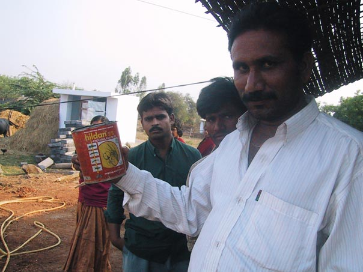
An old insecticide can used to dip water out of the well at a teashop in a village that used pesticides.
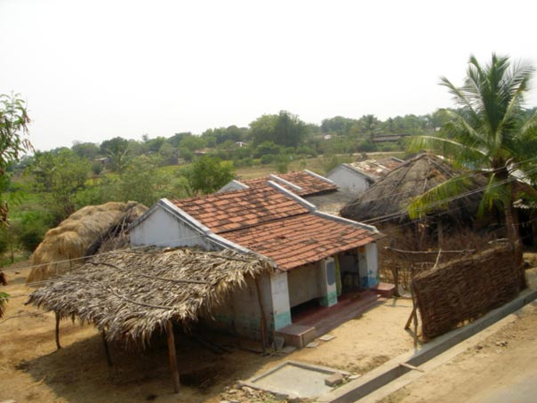
Punukula village (Andhra Pradesh, India).
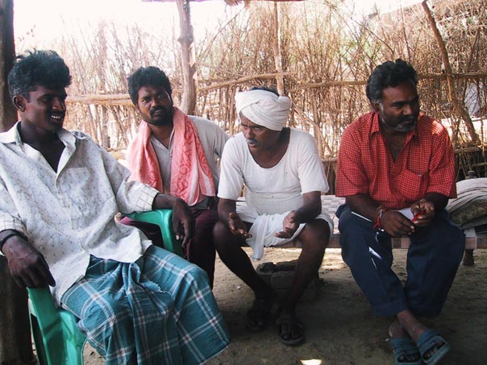
Margam Mutthaiah (second from right) tells his story as the first farmer in Punukula to use Non-Pesticide Management.
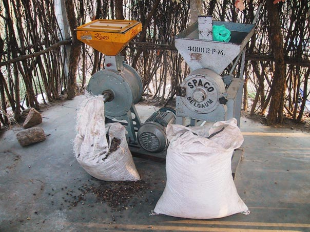
Machine used to grind neem seeds for use in Punukula and sale to other villages.
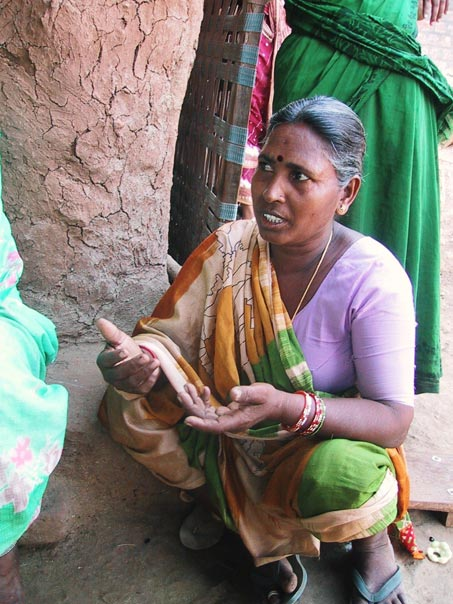
A Punukula woman enthusiastically describes improvements in health since they stopped using pesticides.
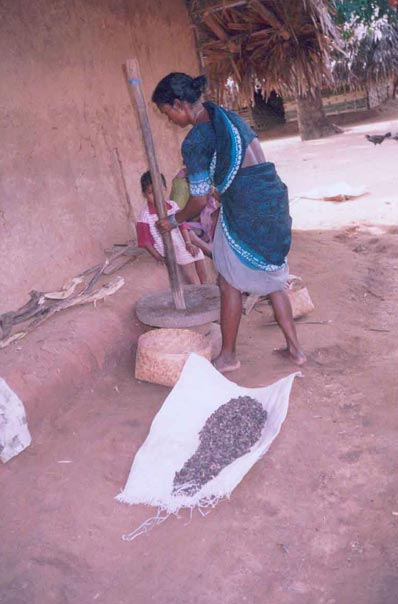
Crushing neem seeds into a powder.
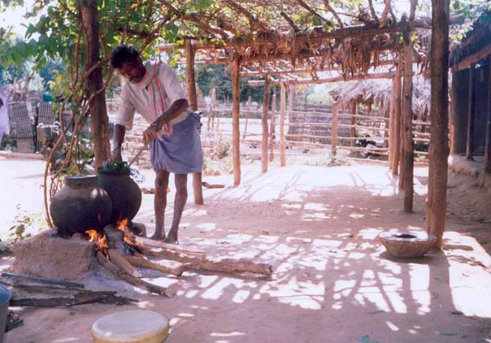
Preparing solutions from neem seeds, chili-garlic, and the leaves of insect-resistant trees.
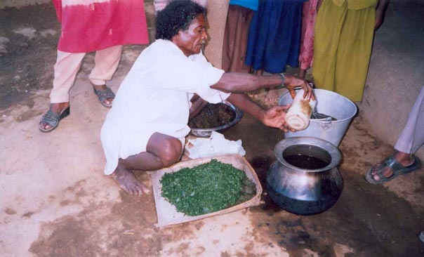
Preparing solutions from neem seeds, chili-garlic, and the leaves of insect-resistant trees.
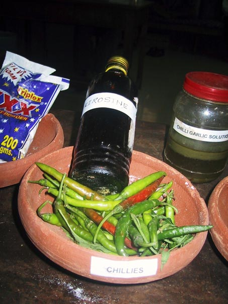
Ingredients for making chili-garlic solution.
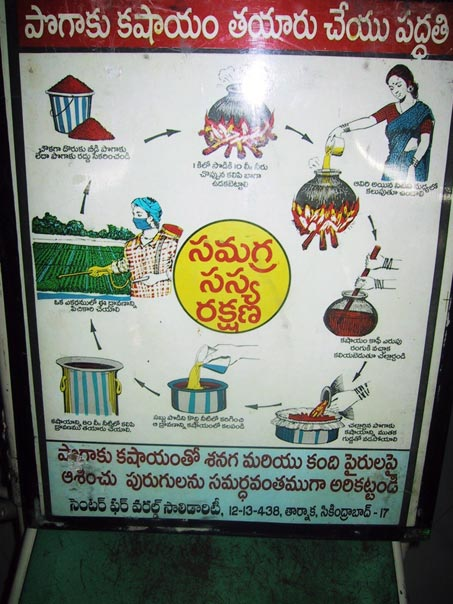
Poster showing how to prepare and apply chili-garlic solution.
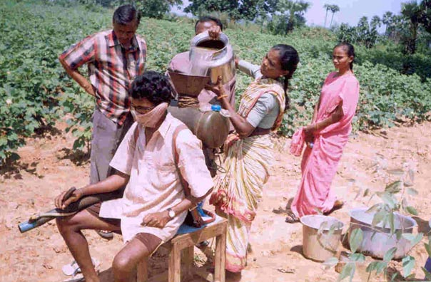
Pouring chili-garlic solution into a tank for spraying onto cotton plants.
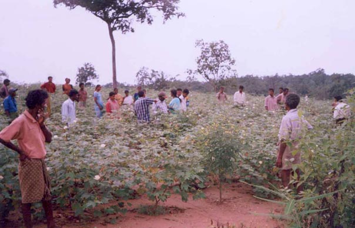
Visitors to Punukula inspect a cotton field that contains "trap crops" (right foreground) to attract pest insects away from cotton plants.
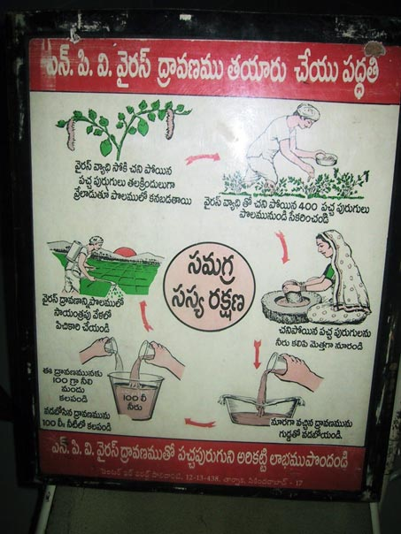
Poster showing how to prepare and apply bollworm virus solution.
4. Ingredients for Success in EcoTipping Point Case Studies (Short Handout)
Shared community awareness and commitment.
Strong democratic institutions and genuine community participation are prominent in EcoTipping Point stories. The community moves forward with its own decisions, manpower, and financial resources, so everyone feels a sense of ownership for community action.
Outside stimulation and facilitation.
Outsiders can be a source of fresh ideas and encouragement. A success story typically begins when people or information from outside a community stimulate a shared awareness about a problem and introduce game-changing ideas for dealing with it.
Enduring commitment of local leadership.
Trusted and persistent leaders inspire the deep-rooted and continuing community commitment and participation necessary to reverse the vicious cycles driving decline.
Co-adaptation between social system and ecosystem.
Social system and ecosystem fit together, functioning as a sustainable whole. When one gains, so does the other.
"Letting nature do the work."
EcoTipping Points create the conditions for an ecosystem to restore itself by drawing on nature's healing powers.
Rapid results.
Quick "payback" and something that can stand as a symbol of success help communities stay committed to change.
Key Symbol.
Something that serves as inspiration or stands for success in a way that helps communities stay committed to change.
Overcoming social obstacles.
Overcoming social, political, and economic obstacles that could block positive change.
Social and ecological diversity.
Greater diversity of people, ideas, experiences, and environmental technologies provide more choices and opportunities, and therefore better chances that some of the choices will be good.
Social and ecological memory.
Learning from the past adds to diversity and often points to choices that were once sustainable. Ecosystems contain "memory" of nature's design for sustainability.
Building resilience.
"Locking in" sustainability by creating the ability to adapt and deal with new (and often unexpected) conditions that threaten sustainability.
Vocabulary
- Stimulation: To excite activity or growth.
- Social System: Everything about a human society, including its organization, knowledge, technology, language, culture, and values.
- Ecosystem: All the living things (plants, animals, microorganisms) and their environment at a particular place.
- Restoration: A return of something to its original, unharmed condition.
- Facilitation: Helping to make something easier or happen successfully.
- Institution: An established pattern of behavior or relationships in a particular society.
- Co-adaptation: Two or more things adjusting to each other and fitting together so they function well.
- Obstacles: The people, things, or events that can block our way.
- Diversity: Variety (many things different from each other).
- Resilience: The ability to return to an original form after severe stress or disturbance.
5. Ingredients for Success in EcoTipping Point Case Studies (Extended Handout)
What does it take to turn around the vicious cycles driving environmental decline? Basically, it takes appropriate environmental technology combined with the social organization to put it effectively into use. More specifically, EcoTipping Point case studies have consistently shown that the following ingredients are keys to success.
Shared community awareness and commitment.
Strong democratic institutions and genuine community participation are prominent in EcoTipping Point stories. These stories do not typically feature top-down regulation or elaborate development plans with unrealistic goals. Of particular importance is a shared understanding of the problem and what to do about it: Shared recognition of why the problem has occurred, shared vision and knowledge of what can be done to set a turnabout in motion, and shared ownership of the community action that follows. The community devises an effective procedure for making this shared understanding a reality. It draws upon its collective experience and moves forward with its own decisions, manpower, and financial resources.
Outside stimulation and facilitation.
We seldom see EcoTipping points "bubble up from within." Outsiders can be a source of fresh ideas and encouragement. While action at the local level is essential, a success story typically begins when people or information from outside a community stimulate a shared awareness about a problem and introduce game-changing ideas for dealing with it. EcoTipping Point success stories will become more common only with explicit programs to provide this kind of stimulation to local communities.
Enduring commitment of local leadership.
Persistence is a key to success. A turnabout from decline to restoration seldom comes easily. It requires community commitment to apply an EcoTipping Points lever with sufficient force to reverse the vicious cycles driving decline. Trusted and persistent leaders inspire the deep-rooted and continuing community commitment and participation necessary for success.
Co-adaption between social system and ecosystem.
Social system and ecosystem fit together, functioning as a sustainable whole. As an EcoTipping Point story unfolds, perceptions, values, knowledge, technology, social organization, and social institutions all evolve in a way that enhances the sustainability of valuable social and ecological resources. Social and environmental gains go hand in hand. "Social commons for environmental commons" are developed, including clear ownership and boundaries, agreement about rules, and enforcement of rules.
"Letting nature do the work."
Micro-managing the world’s environmental problems is far beyond human capacity. EcoTipping Points give nature the opportunity to marshal its self-organizing powers to set restoration in motion.
Rapid results.
Quick "payback" helps to mobilize community commitment. Once positive results begin cascading through the social system and ecosystem, normal social, economic, and political processes took it from there.
A powerful symbol.
It is common for a prominent feature of the local landscape – or some other key aspect of an EcoTipping Point story – to represent the entire process in a way that consolidates community commitment and mobilizes community action to carry it forward.
Overcoming social obstacles.
The larger socio-economic system can present numerous obstacles to success on a local scale. For example:
- It imposes competing demands for people’s attention, energy, and time. People are so "busy," they don’t have time to contribute to the "social commons."
- People who feel threatened by innovation or other change take measures to suppress or nullify the change.
- Outsiders try to take over valuable resources after the resources are restored.
- Dysfunctional dependence on some part of the status quo prevents people from making changes necessary to break away from decline.
Social and ecological diversity.
Greater diversity provides more choices and opportunities – and better prospects that some of the choices will be good. For example, an ecosystem’s species diversity enhances its capacity for self-restoration. Diversity of perceptions, values, knowledge, technology, social organization, and social institutions provide opportunities for better choices.
Social and ecological memory.
Social institutions, knowledge and technology from the past have "stood the test of time" and may have something to offer for the present. Nature’s "memory" exists in the resilience of living organisms and their intricate relationships in the ecosystem, which have emerged from the time-testing process of biological evolution.
Building resilience.
“Resilience" is the ability to continue functioning in the same general way despite occasional and sometimes severe external disturbance. EcoTipping Points are most effective when they not only not only set in motion a course of sustainability, but also enhance the resilience to withstand threats to sustainability. As EcoTipping Point stories play themselves out, new virtuous cycles emerge to reinforce and consolidate the gains. A community’s adaptive capacity – its openness to change based on shared community awareness, prudent experimentation, learning from successes and mistakes, and replicating success – is central to resilience.
Vocabulary
- Stimulation: To excite activity or growth.
- Social System: Everything about a human society, including its organization, knowledge, technology, language, culture, and values.
- Ecosystem: All the living things (plants, animals, microorganisms) and their environment at a particular place.
- Restoration: A return of something to its original, unharmed condition.
- Facilitation: Helping to make something easier or happen successfully.
- Institution: An established pattern of behavior or relationships in a particular society.
- Co-adaptation: Two or more things adjusting to each other and fitting together so they function well.
- Obstacles: The people, things, or events that can block our way.
- Diversity: Variety (many things different from each other).
- Resilience: The ability to return to an original form after severe stress or disturbance.
6. Ingredients for Success: Escaping the Pesticide Trap (Student Worksheet)
Instructions: This worksheet will help you to identify the Ingredients for Success in a real situation. First review the Vocabulary needed for this success story. Second, read the success story, underlining the new vocabulary as you go. Finally, write on your worksheet a bullet-point list of elements in the story that are examples of each ingredient for success. For instance, if someone from another city introduced a new idea or helped get a project going, you could put a phrase or sentence about that under ‘outside stimulation and facilitation.’ Be as SPECIFIC as possible. You should have at least one example for each ingredient, though for some you may have many!
Vocabulary
- Pesticide – A substance that kills harmful plants or animals.
- Insecticide – A pesticide used to kill insects.
- Fertilizer – A substance applied to the soil to improve plant growth. Chemical fertilizers are manufactured and contain plant nutrients such as nitrogen, phosphorous, or potassium. Organic fertilizers are natural materials such as animal manure, compost, or straw.
- Agrochemical – A chemical for farming.
- Multinational corporation – A large company that operates in several different countries.
- Indentured labor – Work under a contract that obligates a person to continue the work for a specified period. An employer for child indentured labor pays a parent for the child to work for a period such as a year.
- Toxic chemical – Poison.
- Pesticide (or insecticide) resistance – The ability of a plant or animal to be unharmed by a pesticide.
- Vermicomposting – Making organic fertilizer by rotting manure, leaves, or other plant materials with the assistance of earthworms. The earthworms break the material into small pieces so bacteria can reach all of the material to decompose it, transforming it into plant nutrients.
- Marketing cooperative – An organization that sells its members’ products.
Student Responses
- Shared community awareness and commitment
- Outside stimulation and facilitation
- Enduring commitment of local leadership
- Co-adaption between social system and ecosystem
- “Letting nature do the work”
- Rapid results
- A powerful symbol
- Overcoming social obstacles
- Social and ecological diversity
- Social and ecological memory
- Building resilience
7. Ingredients for Success: Escaping the Pesticide Trap (Teacher Key)
Shared community awareness and commitment.
Strong democratic institutions and genuine community participation are prominent in EcoTipping Point stories. Of particular importance is a shared understanding of the problem and what to do about it, and shared ownership of the action that follows. Communities move forward with their own decisions, manpower, and financial resources. In Punukula, this process was greatly facilitated by support from the village council (panchayat) and farmers' association. Women pressured their husbands to use Non-Pesticide Management (NPM), and they played an essential role in gathering and grinding neem seeds and preparing neem solutions as well as other NPM materials like chili-garlic solution.
Outside stimulation and facilitation.
Outsiders can be a source of fresh ideas. While action at the local level is essential, a success story typically begins when people or information from outside a community stimulate a shared awareness about a problem and introduce game-changing ideas for how to deal with it. Venu Madhav came from a village about 100 kilometers from Punukula, as a worker for a local non-government organization called SECURE (Socio-Economic and Cultural Upliftment in Rural Environment). He encouraged the villagers to consult with a woman in another village who had learned how to control pests without chemical pesticides. Venu Madhav and the SECURE staff found an "early adopter" in a prominent village elder, Margam Mutthaiah. They coached him in Non-Pesticide Management, and two SECURE staff members were posted in Punukula to facilitate further progress. The Center for Sustainable agriculture in Hyderabad, with assistance from agricultural entomologists at the state university, provided technical support for Punukula and technical training to spread NPM to other villages.
Enduring commitment of local leadership.
Trusted and persistent leaders inspire the deep-rooted and continuing community commitment and participation necessary for success. Margam Mutthaiah proved to be a strong and dedicated leader. Adoption of Non-Pesticide Management grew in a widening circle, until the entire village of Punukula was pesticide-free. As NPM began to spread to other villages, the entire village of Punukula assumed a role of leadership, hosting thousands of visitors who came to learn about NPM. Andhra Pradesh's state government showed leadership when it responded to the efforts of pesticide companies to stop the spread of NPM, by deciding instead to disseminate NPM through its anti-poverty network and committing the resources for NPM to eventually become a reality in more than 15,000 villages.
Co-adaption between social system and ecosystem.
Social system and ecosystem fit together, functioning as a sustainable whole. Communities create a "social commons" to fit their "environmental commons." Instead of investing scarce cash resources in pesticides, the community invested its more abundant time and labor in Non-Pesticide Management practices, using the locally available neem tree. They also ventured into vermicomposting as a superior substitute for chemical fertilizers. They then declared Punukula to be a "pesticide-free village," improving not only the health of the people, but the entire ecosystem as well.
"Letting nature do the work."
EcoTipping Points give nature the opportunity to marshal its self-organizing powers to set restoration in motion. Neem is a local, fast-growing tree that produces a multitude of natural pesticides. Placing neem cakes in the soil improves not just pest control, but nitrogen content as well. Nearly a dozen other complementary natural methods were also used to trap and/or kill pests and to lure insect-eating birds to the cotton fields. The return of birds and other pest predators to the fields made pest control increasingly easy; eventually fewer neem applications and less labor were required.
Rapid results.
Quick "payback" helps to mobilize community commitment. In a single cropping season, "early adopter" Margam Mutthaiah showed Non-Pesticide results good enough to convince 20 other farmers to try it. Their harvest proved to be just as good as those still using pesticides—at much less cost. Punukula quickly became a model for neighboring communities and eventually for the entire state.
A powerful Symbol.
It is common for prominent features of EcoTipping Point stories to serve as inspirations for success, representing the restoration process in a way that consolidates community commitment and mobilizes community action. "Health and Prosperity" were central symbols for motivating a continuation of the positive change set in motion by Non-Pesticide Management. Villagers always emphasized the idea of how removing the toxins from their land was returning them to health, vigor, and well being they did not even realize they had lost, since they were no longer poisoning themselves. They also returned regularly to the theme that giving up pesticides gave them the opportunity to get out of debt, since they no longer needed to spend large amounts of money on these costly agricultural chemicals.
Overcoming social obstacles.
The larger socio-economic system can present numerous obstacles to success on a local scale. Agrochemical dealers who promised to purchase the cotton harvests punished Non-Pesticide Management users by paying less for their crops, but the village farmers formed a marketing cooperative that found fairer prices elsewhere. They overcame their debt problem by banding together so pesticide providers were not able to bully them with demands for immediate repayments. Also, they were able to persuade the state government to encourage Non-Pesticide Management, over the objections of pesticide companies and dealers.
Social and ecological diversity.
Diversity provides more choices, and therefore more opportunities for good choices. Farmers at Punukula received a diversity of technical assistance which, when added to their own creativity, led to a diversity of Non-Pesticide Management techniques and the most effective strategy for controlling crop pests. Eventually natural biodiversity was restored to the landscape, providing natural control by bird and insect predators of crop pests.
Social and ecological memory.
Learning from the past adds to the diversity of choices, including choices that proved sustainable by withstanding the "test of time." For centuries Indians have used neem to protect stored grains from insects and produce soaps, skin lotions, and other health products. Moreover, Nature contains an evolutionary "memory" of its ecological design for sustainability. Non-Pesticide Management took advantage of the ecological memory that resided in birds and other pest predators, whose populations recovered once toxic pesticides declined in the environment.
Building resilience.
"Resilience" is the ability to continue functioning in the face of sometimes severe external disturbances. The key is adaptability. Pesticide abstinence brought back natural control of pests. This reduced costs for agricultural inputs as well as hospital bills and the indentured servitude of children, which allowed families to reduce their debts and establish more financial resilience. People were able to expand their acreage of crop production, pursue more education, and engage in more entrepreneurial and community projects. Teaching Non-Pesticide Management in schools made it an established part of the village culture. All of these advances, along with the confidence engendered by success, increased community solidarity, a stronger social support (mutual help) system, and getting indentured children back to school, made Punukula's villagers better able to withstand many types of challenges.
8. Feedback Diagrams: Escaping the Pesticide Trap (Student Worksheet)
Diagram for students to fill in
Instructions: Fill in the blanks in the boxes, writing “more” to indicate an increase during the story’s period of decline, or “less” to indicate a decrease during that period. Draw arrows between boxes to show which factors were affecting other factors strongly enough to cause their increase or decrease. There should be at least one arrow pointing away from each box and at least one arrow pointing into each box. Finally, trace circular patterns of the arrows that represent “vicious cycles” that were set in motion by the negative tipping point and helped to drive decline.
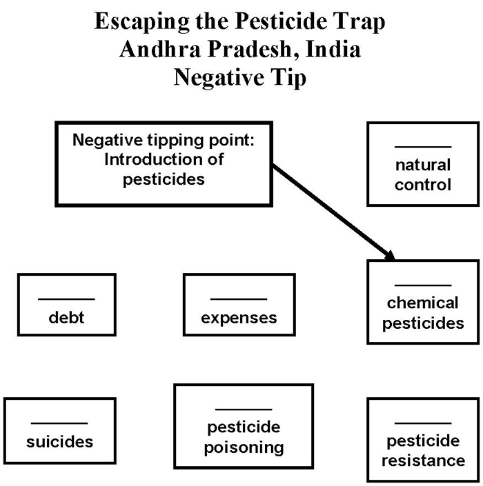
Diagram for students to fill in
Instructions: Fill in the blanks in the boxes, writing “more” to indicate an increase during the story’s period of restoration, or “less” to indicate a decrease during that period. Draw arrows between boxes to show which factors were affecting other factors strongly enough to cause their increase or decrease. There should be at least one arrow pointing away from each box and at least one arrow pointing into each box. Finally, trace circular patterns of the arrows that represent “virtuous cycles” that were set in motion by the positive tipping point and helped to drive restoration.
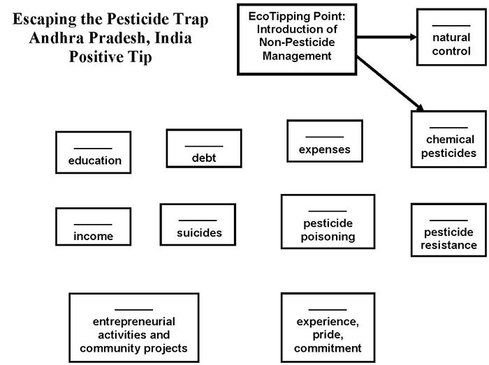
9. Feedback Diagrams: Escaping the Pesticide Trap (Teacher Key)
The negative tipping point came in the early 1980s with the introduction of cotton farming that included chemical pesticides as an integral part of the production package. Insect control with chemical pesticides proved unsustainable. The farmers descended into a downward spiral of pesticide poisoning and debt:
- The pest insects developed resistance, setting in motion a vicious cycle of heavier pesticide use and more resistance. Human pesticide poisoning became common.
- Natural control of the pest insects by birds and predatory insects declined as these animals were killed by heavier insecticide use. This made the farmers even more dependent on insecticides, increasing the quantity of insecticides applied to the fields.
- Heavy insecticide use cut deeply into the farmers’ income. Compounded with sometimes catastrophic medical expenses due to pesticide poisoning, debt increased, and so did despair and suicides. Debt to pesticide dealers made it difficult for farmers to break away from cotton production and the pesticides.
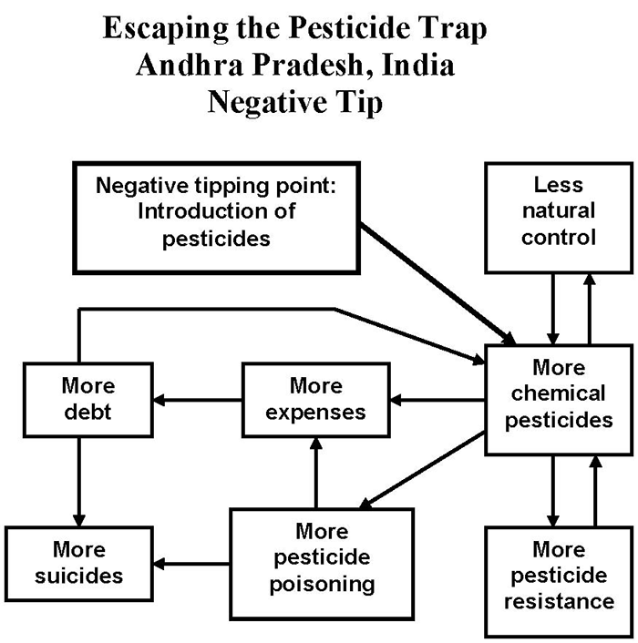
The positive tipping point was the introduction of Non-Pesticide Management based on neem and an assortment of other ecological insect control methods. It started in Punukula village. The vicious cycle involving resistance to chemical insecticides disappeared. The ensuing cascade of effects reversed the other two feedback loops in the negative tip, transforming the vicious cycles to virtuous cycles:
- Natural control was gradually restored as birds and predatory insects returned to the farms.
- Free of heavy medical expenses and chemical insecticide costs, the farmers realized enough profit to start paying off their debts. Suicides declined and they were able to break away from the pesticide dealers.
- Confidence from success with Non-Pesticide Management, along with higher incomes from farming, set in motion additional virtuous cycles involving entrepreneurial activities and projects for village welfare.
- Some of the farmers used their extra money to lease more land for agricultural production. In addition to increasing their income, the additional demand for farm labor increased farm wages.
- The village was stimulated to undertake a project to rescue indentured children and others that dropped out of school, providing them with catch-up education to return to school.
- A new virtuous cycle (not shown in the diagram) was set in motion when people from other villages heard about the success in Punukula and came to see what happened. Non-Pesticide Management spread to several thousand villages.
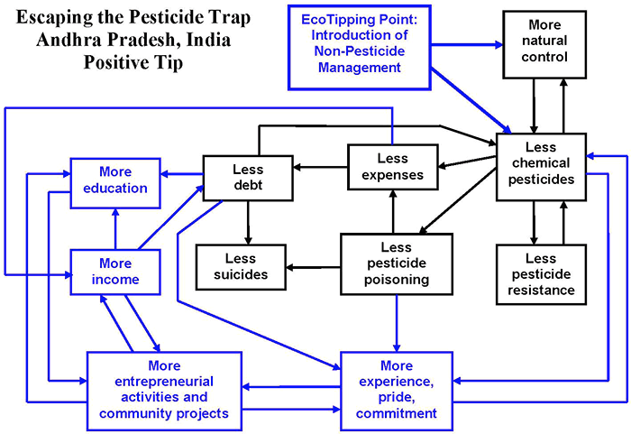
Black: Vicious cycles reversed by the EcoTipping Point, transforming those vicious cycles into virtuous cycles.
Blue: Additional benefits created by the EcoTipping Point, forming new virtuous cycles that helped to lock in the gains.
10. Ingredients for Success Powerpoint Preview
Use Previous, Next, or the slide menu to view the presentation.
11. "Student Centered How Success Works" PowerPoint Preview
This PowerPoint file contains photos for this case. Teachers can use it for PowerPoint presentations, and students can use it to create their own presentations as described in Step #10 of “Suggested Procedure” at the top of this page.
Use Previous, Next, or the slide menu to view the presentation.
12. Video:
Escaping the Pesticide Trap (India)
- Producer: Damon Wolf
- Download: video-etp-pesticide.mp4
- Watch this video on YouTube
- The economics of addiction can be summed up in a few words: Sell a product that makes buyers need it more. Cotton farmers in Andhra Pradesh had descended into a seemingly hopeless abyss of escalating pesticide dependence and debt. Suicides were becoming common. "Non-Pesticide Management" was the tipping point that brought health and hope to the farmers in Punukula village. Thousands of villages are now embarking on the same path.
- Download video script (PDF)